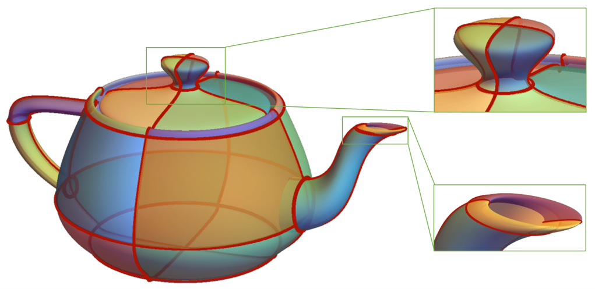

Biography
I am currently a postdoctoral researcher in
My research interest includes computer aided geometric design, computer aided design and computer graphics.
Publications
|
|
Efficient computation of moving planes for rational parametric surfaces with base points using Dixon resultants
Kai Li, Xiaohong Jia and Falai Chen Computer Aided Geometric Design , Vol. 107, 2023. |
|

|
Computing the Intersection of Two Rational Surfaces Using Matrix Representations
Xiaohong Jia, Kai Li and Jinsan Cheng Computer Aided Design (Special Issue of ACM Symposium on Solid and Physical Modeling), Vol. 150, 2022. |